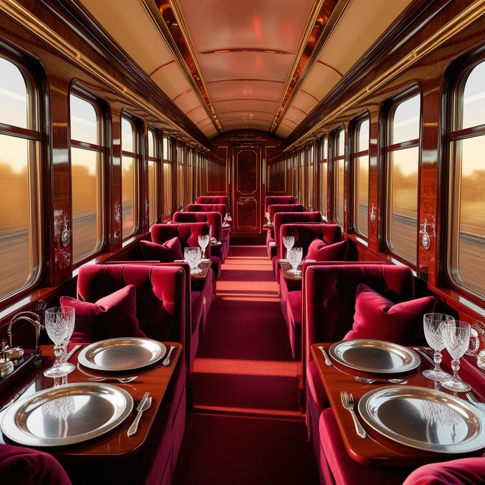
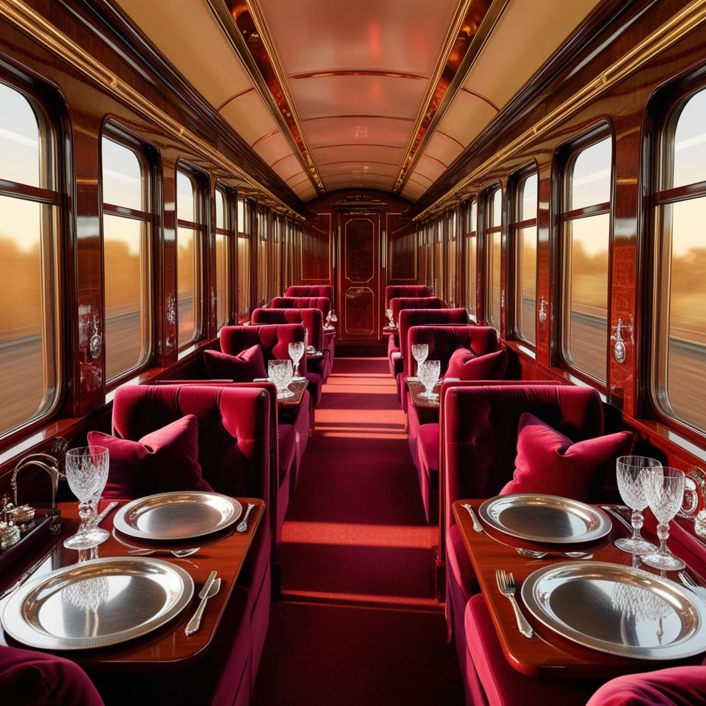

Luxe 300
 

Луксозният влак Luxe 300 е върхът на пътуванията с комфорт и стил. Проектиран специално за VIP пътници, той предлага незабравимо изживяване, съчетаващо лукс, иновации и безупречно обслужване. С Luxe 300, пътуването не е просто средство за придвижване, а истинско приключение.
Влакът Luxe 300 впечатлява с изискания си дизайн и вниманието към детайла. Интериорът е оформен от водещи архитекти и декоратори, които са създали атмосфера на елегантност и уют. Просторните вагони са оборудвани с удобни кресла, които се трансформират в легла, а всяка кабина разполага със собствена баня. Специално внимание е отделено на звукоизолацията, за да се гарантира спокойствието на пътниците.
Пътуването с Luxe 300 е и кулинарно изживяване. Шеф-готвачи, вдъхновени от световната гастрономия, предлагат меню с изискани ястия, приготвени от местни съставки. Пътниците могат да се насладят на гурме ястия, съпътствани от изключителни вина и коктейли, поднесени в стилна обстановка. Влаковата кухня е отворена за пътниците, които искат да наблюдават процеса на приготвяне на храната.
Обслужването в Luxe 300 е на най-високо ниво. Всеки пътник получава персонален асистент, който се грижи за всички негови нужди по време на пътуването. От организиране на екскурзии до предлагане на релаксиращи спа процедури, екипът е готов да осигури незабравимо преживяване за всеки гост.
Luxe 300 предлага разнообразие от маршрути, обхващащи най-красивите и интересни места по света. От величествени планини до живописни крайбрежия, всяко пътуване е уникално и предоставя възможности за разглеждане на забележителности и културни изживявания.
Луксозният влак Luxe 300 е символ на съвременния лукс и комфорт. Той предлага на VIP пътниците не само удобно и приятно пътуване, но и незабравими моменти на изисканост и изключително обслужване. С Luxe 300 всяко пътуване се превръща в специално изживяване, което остава в паметта за дълго.
Разгледай други влакове